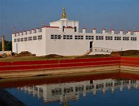

2 . Lumbini
|  |
| district |
kathmandu |
| affiliation |
Buddhism |
| location |
swayambu, Kathmandu |
| type |
stupa |
| date of established |
16th century |
The stupas related to Buddhism reflect the historical and religious tales that enhances their significance from both aspects. Boudhanath is also one of the largest Buddhist monasteries among all the monasteries situated all over the world.
It is located about 11 km from the center and northern side of Kathmandu. Since the stupa has the huge round of mandala, it makes one of the largest spherical stupas of Nepal.
Not only in Nepal, it is also one of the largest stupas in the world too. Boudhanath stupa which is also popularly known as the boudha is one of the sacred pilgrimage and religious sites that have been able to occupy a special place in the heart of people regardless of their religion.
Bouddhanathstupais on the route through which Tibetans used to enter Kathmandu valley through the village of sankhu that lies in the north east corner.
Besides, many Tibetan merchants who used to travel to Nepal for trade used to rest and offer prayers in this heritage site. Even some refugees from Tibet during the 1950 period, entered Nepal and resided around Boudhanath Stupa. This stupa is also said to have etomb the remainings of Kassapa Buddha.